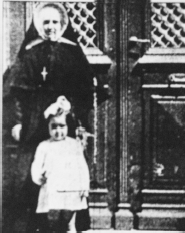

Çerkez Ethem Beyin gurbet faciasından kalan iki resim... Ekim 1990 yılında yayınlanan dizide Reşit Bey'in kızı Güner Kuban 18 yaşında. Diğerinde ise Maria Josephine adını taşırken Atina'da rahibe ile görülüyor. (Güneş Gazetesi 27-29 Ekim 1990)